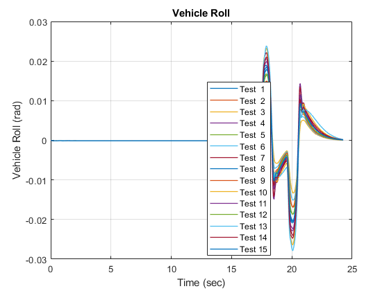
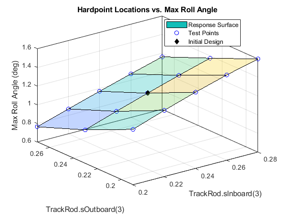
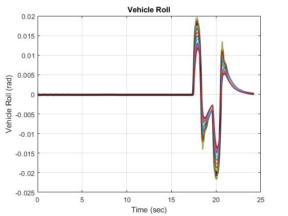
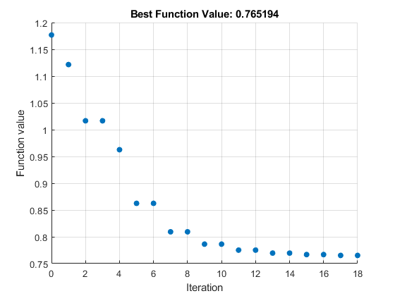
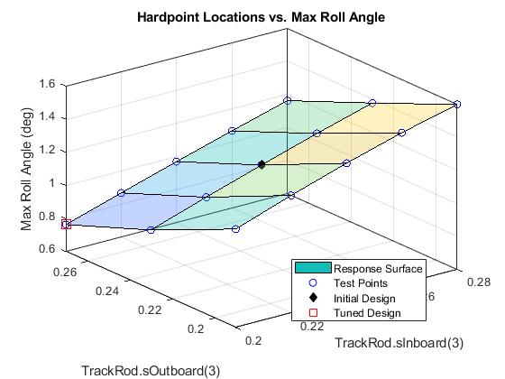

Tuning Suspension Hardpoints to Meet Vehicle Performance Metrics
This example tunes suspension hardpoints to minimize the maximum body roll angle during a double-lane change. Using MATLAB scripts you can specify the which hardpoints (such as outboard hardpoint on the upper wishbone) and which coordinates (such as along the x, y, or z axis) should be tuned.
First a sweep is performed to explore the design space. If two coordinates are selected for tuning, a 2D plot will be shown, otherwise a table of the tested values and the resulting performance metric are shown. Next, optimization algorithms are used to find the combination that comes closest to the target value of the selected performance metric.
The documentation below shows the steps performed on sm_car.slx.
Contents
Vehicle Model
The model sm_car can be configured to test several different types of suspensions. The suspension type is selected based on field Vehicle.Chassis.SuspA1.Linkage.class.Value within a MATLAB data structure. The locations of the hardpoints are defined within that structure.
mdl = 'sm_car'; open_system(mdl) sm_car_load_vehicle_data(mdl,'064'); sm_car_config_variants(mdl);
Suspension Model
This is the structure of the suspension. The entire suspension is parameterized based on hardpoints. Those hardpoints are defined based on [x y z] locations relative to a common reference point. In the default set of data provided, that reference point is on the ground at the point midway between where the left and right tires touch the ground.
open_system('sm_car/Vehicle/Vehicle/Chassis/SuspA1/Linkage/Linkage L/FiveLinkShockFront','force');
Define Sets of Values for Parameter Sweep
The portion of the design space that will be tested is defined by selecting hardpoint coordinates and a set of values for that coordinate. In this example, we vary the z-coordinate for both ends of the track rod in the steering system. MATLAB will test each combination of values for the two points and plot the result. Any number of coordinates can be used for the sweep, we limited it to two in the example so that we could plot the results as a surface.
% Settings parameters to be swept % path2Val is complete path to variable and index in parentheses par_list(1).path2Val = 'Vehicle.Chassis.SuspA1.Linkage.TrackRod.sInboard.Value(3)'; par_list(1).relRange = -0.04:0.02:0.04; % Relative range in m par_list(2).path2Val = 'Vehicle.Chassis.SuspA1.Linkage.TrackRod.sOutboard.Value(3)'; par_list(2).relRange = -0.04:0.04:0.04; % Relative range in m for par_i = 1:length(par_list) par_list(par_i).initVal = eval(par_list(par_i).path2Val); par_list(par_i).valueSet = par_list(par_i).initVal + par_list(par_i).relRange; end % Set up Maneuver sm_car_config_maneuver('sm_car','Double Lane Change'); sim(mdl)
Conduct Parameter Sweep
This function will create a simulation input object where each entry has a unique combination of the hardpoint coordinate values specified above. The simulations will be run using the sim() command, and at the end a surface plot shows how the selected performance metric (in this case maximum roll angle) varies with the two coordinate values.
The roll angle versus time is plotted for each test.
[simInput, simOut] = sm_car_sweep_run(mdl,Vehicle,par_list);
CarMetricsSet = sm_car_sweep_plot_runs(simInput,simOut,'aRoll');
[25-Aug-2025 19:12:59] Running simulations... [25-Aug-2025 19:13:30] Completed 1 of 15 simulation runs [25-Aug-2025 19:13:48] Completed 2 of 15 simulation runs [25-Aug-2025 19:14:06] Completed 3 of 15 simulation runs [25-Aug-2025 19:14:21] Completed 4 of 15 simulation runs [25-Aug-2025 19:14:37] Completed 5 of 15 simulation runs [25-Aug-2025 19:14:54] Completed 6 of 15 simulation runs [25-Aug-2025 19:15:11] Completed 7 of 15 simulation runs [25-Aug-2025 19:15:27] Completed 8 of 15 simulation runs [25-Aug-2025 19:15:43] Completed 9 of 15 simulation runs [25-Aug-2025 19:16:00] Completed 10 of 15 simulation runs [25-Aug-2025 19:16:15] Completed 11 of 15 simulation runs [25-Aug-2025 19:16:31] Completed 12 of 15 simulation runs [25-Aug-2025 19:16:47] Completed 13 of 15 simulation runs [25-Aug-2025 19:17:04] Completed 14 of 15 simulation runs [25-Aug-2025 19:17:19] Completed 15 of 15 simulation runs
Display and Plot Performance Metrics Obtained from Sweep
The parameter values tested and performance metric are shown in a table. For tests with two performance metrics, a surface plot is shown. The surface plot shows how the performance metric varies as the parameter values are modified.
disp('Results of Sweep'); [SweepTableMxRoll,ax_Ro] = sm_car_sweep_table_plot_metrics(par_list,CarMetricsSet,'Max Roll Angle'); displayWholeObj(SweepTableMxRoll) % Use interpolation to highlight initial point of design if(~isempty(ax_Ro)) [vHP1, vHP2] = meshgrid(par_list(1).valueSet,par_list(2).valueSet); param1 = par_list(1).initVal; param2 = par_list(2).initVal; % Obtain performance metric for default design qBstr = interp2(vHP1,vHP2,... reshape(SweepTableMxRoll.("Max_Roll_Angle"),... [length(par_list(2).valueSet) length(par_list(1).valueSet)]),... param1,param2); % Add to plot hold on plot3(ax_Ro,param1,param2,qBstr,'kd','MarkerFaceColor','k','MarkerSize',6,... 'DisplayName','Initial Design'); hold off legend('Location','Best') end
Results of Sweep
SweepTableMxRoll =
15×4 table
par_A1TrackRodIn3 par_A1TrackRodOut3 Max_Roll_Angle Max_Roll_AngleUnits
_________________ __________________ ______________ ___________________
0.2 0.19 1.1949 "deg"
0.2 0.23 0.95997 "deg"
0.2 0.27 0.76403 "deg"
0.22 0.19 1.3101 "deg"
0.22 0.23 1.0706 "deg"
0.22 0.27 0.86736 "deg"
0.24 0.19 1.4168 "deg"
0.24 0.23 1.1768 "deg"
0.24 0.27 0.96862 "deg"
0.26 0.19 1.5133 "deg"
0.26 0.23 1.2795 "deg"
0.26 0.27 1.0663 "deg"
0.28 0.19 1.5957 "deg"
0.28 0.23 1.3755 "deg"
0.28 0.27 1.1611 "deg"
 Optimize Selected Hardpoints to Achieve Target Performance Metrics
Now that we have seen the design space, we will use optimization algorithms to identify the coordinates to minimize roll angle. The list of hardpoint coordinates and their ranges are provided to the optimization algorithm. An objective function runs a simulation with those values and computes the performance metrics. After the optimizer converges on values or reaches the limit on the number of iterations permitted, the results are shown and overlaid on the parameter sweep plots.
In this optimization test, the target value for maximum roll angle is supplied.
metricName = {'Max Roll Angle'};
tgtValue = [0]; % Set to zero, try to minimize
metricWeights = [1];
[xFinal,fval,CarMetrics] = ...
sm_car_optim_run(mdl,Vehicle,par_list,metricName,tgtValue,metricWeights);
Metrics with Initial Set of Parameter Values
ans =
1×4 table
Names Values Units Description
________________ ______ _____ _________________
"Max Roll Angle" 1.1768 "deg" "Body Roll Angle"
Iter Func-count f(x) MeshSize Method
0 1 1.17683 0.04
1 5 1.12159 0.08 Successful Poll
2 9 1.01658 0.16 Successful Poll
3 11 1.01658 0.04 Refine Mesh
4 15 0.962554 0.08 Successful Poll
5 18 0.862487 0.16 Successful Poll
6 20 0.862487 0.04 Refine Mesh
7 24 0.809325 0.08 Successful Poll
8 26 0.809325 0.02 Refine Mesh
9 29 0.7863 0.04 Successful Poll
10 31 0.7863 0.01 Refine Mesh
11 34 0.775102 0.02 Successful Poll
12 36 0.775102 0.005 Refine Mesh
13 39 0.769556 0.01 Successful Poll
14 41 0.769556 0.0025 Refine Mesh
15 44 0.766796 0.005 Successful Poll
16 45 0.766796 0.00125 Refine Mesh
17 47 0.765194 0.0025 Successful Poll
18 48 0.765194 0.000625 Refine Mesh
patternsearch stopped because the mesh size was less than options.MeshTolerance.
Elapsed time for optimization = 820.9107
Metrics with Optimized Set of Parameter Values
CarMetricsSummary =
1×6 table
Names StartValue FinalValues tgtValue Units Description
________________ __________ ___________ ________ _____ _________________
"Max Roll Angle" 1.1768 0.76519 0 "deg" "Body Roll Angle"
paramSummary =
2×2 table
Initial Final
_______ _______
0.24 0.2
0.23 0.26969
  The plots below show add the performance metrics from the new design. Values for the hardpoint locations were found that minimize the roll angle during the double-lane change.
bs_i = find(strcmp(CarMetrics.Names,metricName{1}));
if(~isempty(ax_Ro))
hold(ax_Ro,'on')
plot3(ax_Ro,xFinal(1),xFinal(2),CarMetrics.Values(bs_i),...
'rs','MarkerSize',10,...
'DisplayName','Tuned Design');
hold(ax_Ro,'off')
end

%close all